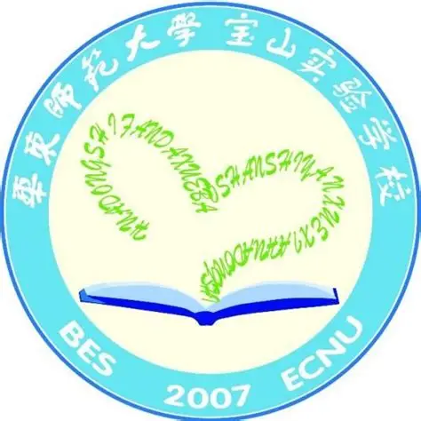
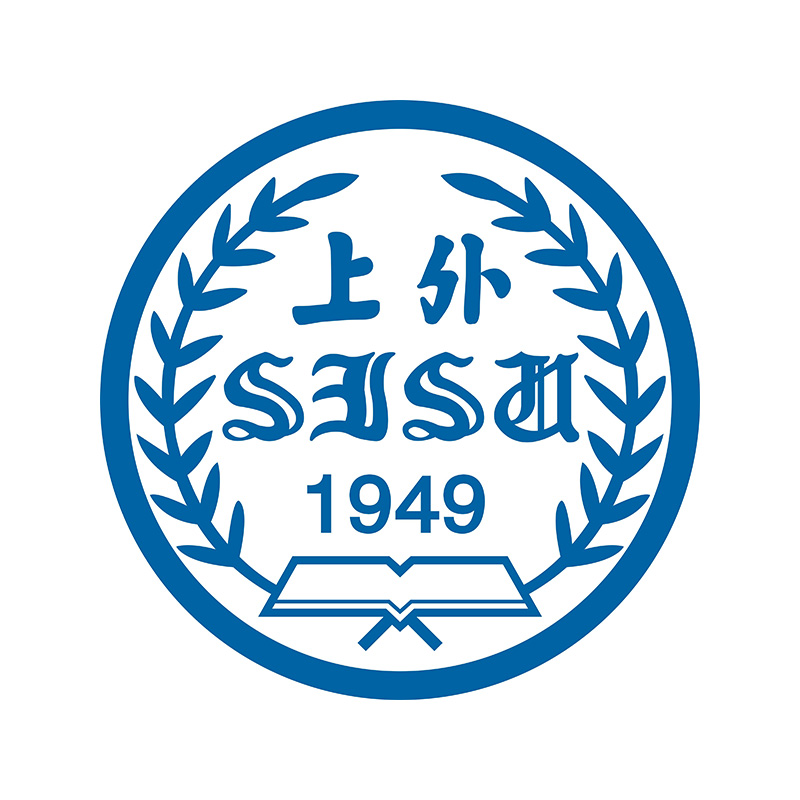

欢迎来到我的个人主页！
↑这是我的微信头像↑
你好，我是张嘉杰
生日：2007年11月6日
家乡：上海
我的爱好：
1. 看足球比赛
2. 听音乐
3. 语言学习与研究（吴方言、外语）
求学经历：
小学：华东师范大学宝山实验学校（2014.09-2019.06）

初中：华东师范大学宝山实验学校（2019.09-2023.06）
高中：上海市行知中学（2023.09-2026.06）
点击访问上海市行知中学官网
大学（本科）：上海外国语大学-数据科学与大数据技术（认知科学大数据）（2026.09-至今）

点击访问上海外国语大学官网*不知道以后是否还会继续深造！
我的学习方向：
当今时代，AI技术空前发达，我需要在扎实学习理工科知识技能的同时，发掘、培养AI不具备而由人所独有的特质和能力，那就是情感、创造力、批判性思维和人文关怀。我希望通过跨学科交叉融合的学习实践，成为文理兼备的复合型人才，实现理想、造福人类！
联系我
Interpret The World, Translate The Future.